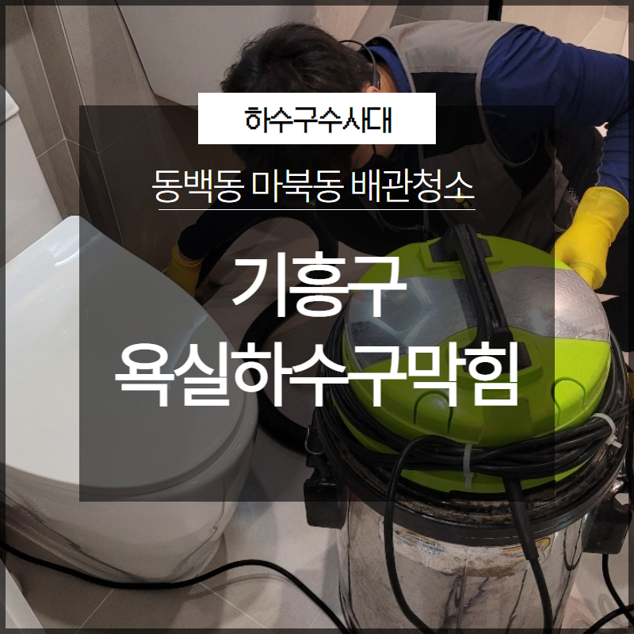

🏠 기흥구 욕실하수구막힘 동백동 마북동 배관청소 확실하게
용인 기흥 하수구막힘 전문 시공 후기

📋 작업 개요
- 위치: 용인 기흥, 기흥, 용인
- 서비스 유형: 하수구막힘, 배관막힘, 배관청소
- 작업 일시: 2023. 6. 21. 9:35
- 업체명: 하수구수사대 (010-5615-2118)
🔍 문제 상황
안녕하세요. 하수구수사대입니다.
우리가 자주 생활을 하는 공간에서 물을 사용하는 공간에는 모두 배수시설이 설치가 되어 있습니다. 이러한 배수시설이 있는 곳에서 배관 막힘이 발생을 하게 되면 누구에게나 불편함을 줄 수밖에 없을 텐데요.
배관 같은 경우에는
우리 눈에 잘 보이지 않는 시설이다 보니 막힘이 발생을 하기 전까지는 평소에 잘 신경을 쓰지 않고 살아가게 되는 경우가 대부분이라고 할 수 있습니다. 우리가 평소에 문제없이 사용을 하고 있는 배관이라고 하더라도 갑자기 막힘이 발생하는 경우가 있을 수 있는데요.

🔎 원인 분석
💡 전문가 진단: 배관 같은 경우에는
이런 경우에는 대부분의 분들이 당황스러울 수밖에 없을 것입니다. 저희 하수구수사대에서는 오랜 노하우를 통해서 배관 전문 해결을 해왔던 곳으로 막힘 해결을 전문으로 해오고 있습니다. 이번에 의뢰를 받고 방문을 한 현장은 오늘은 기흥구 욕실하수구막힘 동백동 마북동 배관청소 현장이었는데요.
배관 해결의 후기를 통해서 전문 업체의 경우는 배관 막힘을 어떻게 해결을 하게 되는지를 알려드리도록 하겠습니다. 배관설비 같은 경우는 우리가 생활을 하는 데 있어서 없어서는 안되는 중요한 설비라고 할 수 있습니다.
생활하수 같은 것들은 매일 배출을 하게 되다 보니 각종 찌꺼기들이 원활하게 배관을 통해서 배출이 되어야 하지만 알게 모르게 배관의 내부에 이물질들이 쌓이거나 막히게 되면서 막힘으로 인해서 배출이 어려워질 수밖에 없는 것입니다.
원활하게 배수를 유지하기 위해서는
정기적으로 전문 업체를 통해서 배관의 내부를 점검을 해주는 것이 필요하다고 할 수 있습니다. 특히 요즘처럼 많이 있는 다세대주택이나 대형건물들 같은 경우에는 정기적인 관리가 더욱 필요하다고 할 수 있습니다.

🔧 작업 과정
이번에 의뢰를 해주신 현장도 기흥구 욕실하수구막힘 동백동 마북동 배관청소로 다세대 주택으로 되어있는 빌라의 한 주택에서 욕실의 하수구가 막히게 되면서 의뢰를 해주신 곳이었습니다.
욕실 같은 경우에는 배관이 막히게 되는 경우는 배관이 노후가 되거나 외부의 이물질들이 조금씩 들어가게 되면서 갑작스러운 막힘이 발생을 하게 될 수 있습니다. 매일 사용을 해야 하는 욕실의 하수구가 막히게 되면 너무나 불편하게 될 수밖에 없는데요.
빠른 해결을 위해서 가장 먼저 하는 작업은
바로 배관 내시경 작업이라고 할 수 있습니다. 배관 막힘 같은 경우는 고객님의 불편함이 예상될 수 있는 만큼 되도록 빠른 해결을 하는 것이 필요한 것입니다. 배관 내시경 같은 경우는 육안으로는 볼 수 없는 배관 내부를 파악하는 데 있어서 필수적인 작업이라고 할 수 있는데요.
전문 업체에서는 이러한 전문 장비를 통해서 막힘의 원인을 정확히 파악하고 해결을 하기 때문에 제대로 된 해결이 될 수 있습니다. 고객님 댁의 화장실에 하수구가 막히게 되면서 욕실 내부 전체가 물이 잘 빠지지 않게 되었는데요.
배관 내시경으로 내부 상태를 살펴보니 머리카락이 엉킨 덩어리들과 휴지 덩어리가 배관 내부와 벽 쪽의 을 막고 있는 것이 보였습니다. 내시경으로 배관 내부의 이물질들을 파악하고 본격적으로 제거를 하는 작업을 시작하였는데요.
이물질을 제거하기 위해서 배관의 상태에 맞는 전문 장비를 이용해서 작업을 시작하였습니다. 배관 내부의 스케일링 작업을 통해서 이물질들이 완전히 제거가 될 때까지 반복적인 작업을 하면서 기흥구 욕실하수구막힘 동백동 마북동 배관청소 배관 막힘을 해결하였습니다.


✅ 작업 완료
하수구 막힘이 발생하게 된다면
당황하지 마시고 저희 하수구수사대를 찾아주세요.


⚠️ 하수구 배관 막힘 예방 및 관리 가이드
- ✅ 머리카락, 비닐, 물티슈 등 물에 분해되지 않는 이물질은 하수구 유입을 절대 금지해 주세요.
- ✅ 하수구 거름망을 씌우고 모여진 이물질은 주기적으로 쓰레기통에 바로 비워주셔야 합니다.
- ✅ 배관 노후가 심할 경우 이물질이 더 쉽게 걸리므로 주기적인 배관 세척(고압세척 등)을 권장합니다.
- ✅ 작업 후 1년 이내 재발 시 하수구수사대에서 무상 A/S 보증 서비스를 제공합니다.
💡 핵심 정리
- 확실한 장비 작업(내시경 점검 및 샤프트 스케일링)으로 원인을 뿌리 뽑습니다.
- 작업 후 1년 이내에 동일한 부위 재발 시 100% 무상 A/S 서비스를 보장합니다.
- 서울 · 경기 · 인천 전 지역에 24시간 언제든 긴급 출동할 수 있도록 항시 대기 중입니다.
❓ 자주 묻는 질문 (FAQ)
🚨 용인 기흥 하수구막힘 문제로 고민이신가요?
정확한 원인 진단과 확실한 시공으로 재발 없는 해결을 약속드립니다.
24시간 긴급 출동 | 서울 · 경기 · 인천 전지역 | 1년 내 재발 시 무상 A/S